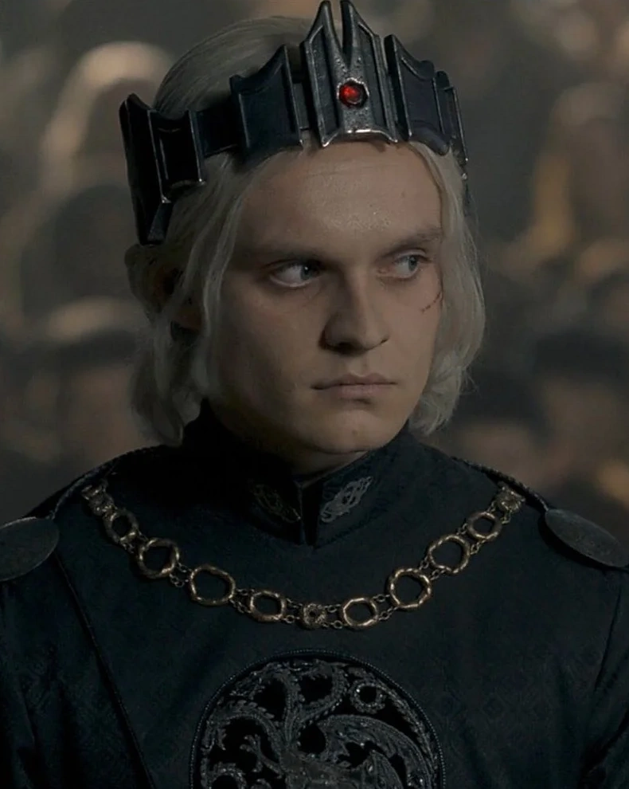
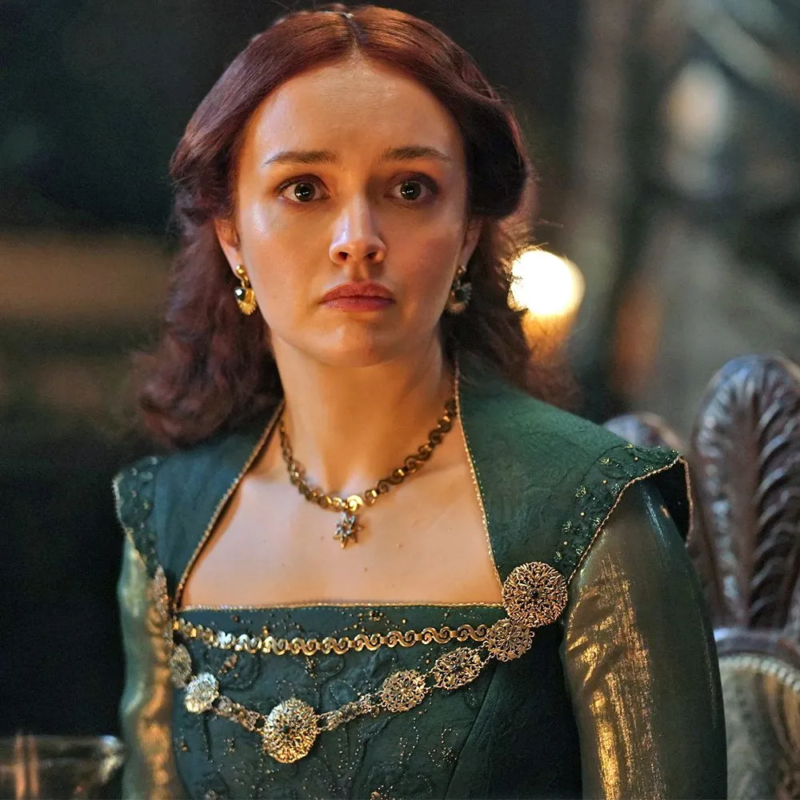

O time Verde é composto pelos apoiadores do rei Aegon II. Após o falecimento do rei Viserys, Otto Hightower e a sua filha, Alicent Hightower, tomaram ações para que sucessor do trono de ferro fosse o filho mais velho do segundo casamento do antigo rei: Aegon II
Conheça os membros conhecidos como "Greens"
- Rei Aegon II Targaryen 
- Príncipe Aemond Targaryen
- Rainha Halaena Targaryen
- Lorde Otto Hightower
- Rainha víuva Alicent Hightower 
- Lorde comandante Criston Cole

Um novo elenco, uma nova história, o mesmo universo da aclamada série "Game of Thrones"